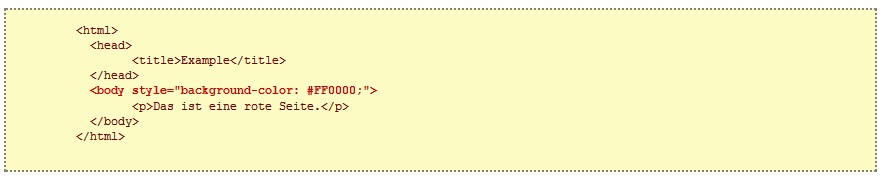
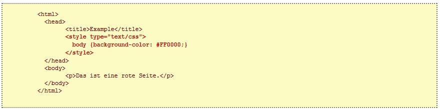
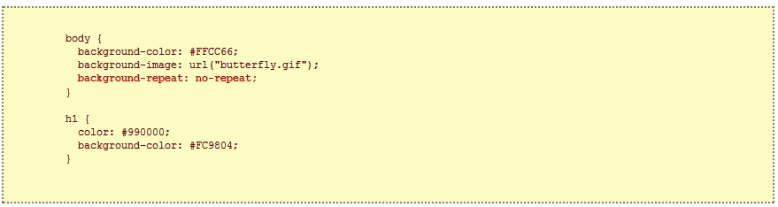
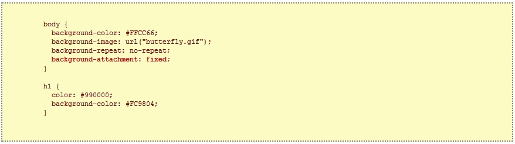
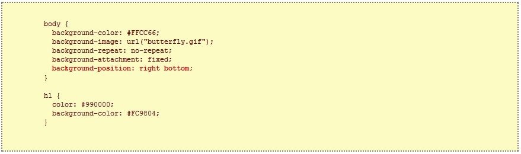
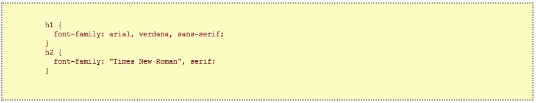
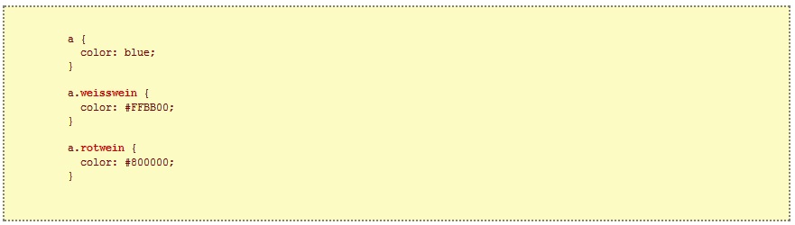
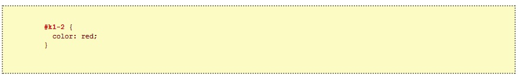

Cascading Style Sheets (CSS) sind ein fantastisches Werkzeug, um Ihre Webseiten zu layouten, ihnen ein Aussehen zu verpassen.
Sie können viel Zeit sparen und es eröffnen sich völlig neue Wege, Webseiten zu designen. CSS ist ein Muss für jeden, der
sich mit Webdesign beschäftigt.Mit diesem Tutorial können Sie in ein paar Stunden mit CSS beginnen. Es ist einfach zu
verstehen und alle nötigen Techniken werden erläutert.
CSS ist eine Stilsprache, die das Aussehen von HTML-Dokumenten definiert. CSS kann man z.B. zum festlegen von Schriftarten,
Farben, Rändern, Linien, Höhen, Breiten, Hintergrundbildern, für fortgeschrittener Positionierung und viele andere Sachen benutzen.
Warten Sie ab!HTML kann zum layouten von Webseiten (miß-)braucht werden. Aber CSS bietet mehr Möglichkeiten und ist zudem viel genauer
und ausgereifter. CSS wird von allen Browsern unterstützt.
Mit HTML werden Inhalte strukturiert. Mit CSS wird der strukturierte Inhalt formatiert.
Eine Möglichkeit CSS in HTML zu verwenden, ist das Attribut style,zB:
Ein weiterer Weg ist, die CSS-Codes über den HTML-Tag "style" einzubinden, z.B. so:
 Ein externes Stylesheet ist einfach eine Textdatei mit der Endung .css. Wie jede
andere Datei auch, können Sie das Stylesheet auf Ihrem Webserver oder Ihrer Festplatte
speichern.Nehmen wir an, Ihr Stylesheet heißt style.css und befindet sich im Ordner style.
Nehmen wir an, wir möchten, dass alle Überschriften in einem Dokument rot sind. Alle Überschriften sind mit dem HTML-Element "h1" markiert.
Der nachfolgende Code setzt die Farbe von "h1"-Elementen auf rot.
Die Eigenschaft background-color beschreibt die Hintergrundfarbe eines Elementes.
Das Element
Die CSS-Eigenschaft background-image wird benutzt, um ein Hintergrundbild einzufügen.
Hier wird die Hintergrund-image für ganzen Body Element hinzugefügt.
In der folgenden Tabelle sehen Sie die vier verschiedenen Werte, die background-repeat annehmen kann, erläutert.
| Wert | Beschreibung |
|---|---|
| background-repeat: repeat-x | Das Bild wird horizontal wiederholt |
| background-repeat: repeat-y | Das Bild wird vertikal wiederholt |
| background-repeat: repeat | Das Bild wird sowohl horizontal als auch vertikal wiederholt |
| background-repeat: no-repeat | Das Bild wird nicht wiederholt |
Um z.B. die Wiederholung des Hintergrundbildes zu verhindern, sollte unser Code wie folgt aussehen:
 Die Eigenschaft background-attachment legt fest, ob sich ein Hintergrundbild mitscrollen läßt oder nicht.
Ein fixiertes Hintergrundbild läßt sich von einem Leser nicht mit dem Text scrollen, währenddessen sich ein
nicht fixiertes zusammen mit dem anderen Inhalt der Seite nach oben aus dem Bild schieben läßt. Die folgende
Tabelle zeigt die zwei verschiedenen Möglichkeiten für die Eigenschaft background-attachment. Klicken Sie auf
die Beispiele, um den Unterschied zwischen scrollbar und fixiert zu sehen.
| Wert | Beschreibung |
|---|---|
| background-attachment: scroll | Das Bild scrollt mit der Seite - nicht fixiert |
| background-attachment: fixed | Das Bild ist fixiert |
Im nachfolgenden Code ist das Hintergrundbild fixiert.
 Standardmäßig wird das Hintergrundbild in der oberen linken Ecke das Bildschirmes festgesetzt.
Mit der Eigenschaft background-position können Sie dies ändern und das Bild frei nach Ihren Wünschen
auf dem Bildschirm positionieren.Es gibt mehrere Wege, dem background-position Werte zuzuweisen.
Aber alle haben die Gemeinsamkeit, dass sie als ein Paar Koordinaten angegeben sind. Der Wert
‘100px 200px’ z.B. positioniert das Hintergrundbild im Browserfenster 100 Pixel von der linken Seite
und 200 Pixel von oben.Diese Koordinaten können als Prozentwert der Bildschirmbreite, feste Größen
(Pixel, Zentimeter usw.) oder mit den Worten top (oben), bottom (unten), center (zentriert),
left (links) und right (rechts) angegeben werden. Die folgende Darstellung verdeutlicht das Prinzip:
| Wert | Beschreibung |
|---|---|
| background-position: 2cm 2cm | Das Bild befindet sich 2 cm vom linken und 2 cm vom oberen Rand der Seite entfernt |
| background-position: 50% 25% | Das Bild ist zentriert und ein Viertel vom oberen Rand entfernt |
| background-position: top right | Das ist ist in der oberen rechten Ecke der Seite positioniert |
Das nachfolgende Codebeispiel positioniert das Hintergrundbild in der unteren rechten Ecke:
Kombination der Hintergrundeigenschaften: die Eigenschaft ‘background’. Es könnte die obigen Eigenschaften
in einem Zeile kombiniert werden
In dieser Lektion werden Sie mehr darüber erfahren, wie Zeichensätze mit Hilfe von CSS eingebunden werden können.
Wir werden auch zeigen, wie man dem Problem begegnen kann, dass eine bestimmte (besondere) Schriftart, welche Sie für
Ihre Webseite ausgesucht haben, nicht angezeigt wird, wenn auf dem betreffenden Rechner selbige Schriftart nicht installiert ist.
Die Eigenschaft font-family wird verwendet, um eine priorisierende Liste der Zeichensätze anzugeben, in der ein bestimmtes Element
oder eine Webseite angezeigt werden soll. Wenn der erste Zeichensatz nicht auf dem Computer, mit dem die Seite betrachtet wird, installiert ist,
wird der nächstfolgende probiert, bis ein vorhandener bzw. passender Zeichensatz gefunden ist.
Es gibt zwei Arten, wie man Zeichensätze kategorisieren kann: Schriftfamilien und generische (gattungsmäßige) Familien. Die beiden Ausdrücke
werden nachfolgend erklärt.
Schriftfamilien: Beispiele für eine Schriftfamilie (oft auch nur “Schriftart” oder “font” genannt) sind z.B. “Arial”, “Times New Roman” oder “Tahoma”.
generische Familien: Generische (oder gattungsmäßige) Familien können wohl am besten als Gruppen von Schriftartfamilien beschrieben werden, die ein
ähnliches Aussehen haben. Als Beispiel sei hier “sans-serif” genannt, welches Schriftarten umfaßt, die keine “Füßchen” haben.
Ein Beispiel für solch eine priorisierende Liste der Zeichensätze könnte wie folgt aussehen:
 Die Eigenschaft font-style weißt dem betreffenden Element die Stile normal (kein Stil), italic (kursiv) oder oblique (schräg) zu.
Im folgenden Beispiel werden alle Überschriften, die mit "h2" markiert sind, kursiv geschrieben.
Mit der Eigenschaft font-variant kann man zwischen normal oder small-caps wählen. Bei small-caps benutzt die Schriftart anstatt der
Kleinbuchstaben (lower-case), kleiner geschriebene Großbuchstaben (upper-case). Verwirrt? Sehen Sie sich die Beispiele an:
Mit der Eigenschaft font-weight gibt man an, wie fett oder “schwer” eine Schriftart angezeigt werden soll. Eine Schrift kann entweder
normal oder bold (fett) dargestellt werden. Einige Browser unterstützen auch die Angabe der Zahlen 100-900 (nur volle Hunderter) um eine feiner
abgestufte Darstellung zu erreichen.
Die Schriftgröße wird durch die Eigenschaft font-size festgelegt.
Man kann viele verschiedene Einheiten (z.B. Pixel und Prozentwerte) verwenden um die Größen zu beschreiben. In diesem Tutorial werden
wir uns auf die meistgebrauchten und zweckmäßigsten Einheiten konzentrieren. Beispiele sind:
Mit Hilfe der font-Eigenschaft können Sie alle Schrift-Eigenschaften in dieser einen Eigenschaft vereinen. Stellen Sie sich z.B. die folgenden
vier Codezeilen vor, die die Schrifteigenschaften für "p" angeben:
Texte zu formatieren, ist eine der Hauptaufgaben für jeden Webdesigner. In dieser Lektion werden wir zeigen, welche unglaublichen Möglichkeiten
CSS bietet, um einen Text nach mehr aussehen zu lassen. Die folgenden Eigenschaften werden beschrieben:
Die Eigenschaft text-indent erlaubt es Ihnen, Ihrem Text einen eleganten Touch zu geben, indem Sie die erste Zeile eines Absatzes einrücken.
Im folgenden Beispiel werden alle Absätze, die mit "p" markiert sind, um 30px eingerückt:
Die CSS-Eigenschaft text-align ist mit dem Attribut align vergleichbar, welches in älteren HTML-Versionen verwendet wurde. Text kann entweder
left (links), right (rechts) oder center (zentriert) ausgerichtet werden. Außerdem steht der Wert justify für Blocksatz zur Verfügung, d.h. jede Zeile
wird so gestreckt, dass alle gleich lang sind. Dies kennen Sie vielleicht aus Zeitungen und Zeitschriften. Im unten stehenden Beispiel ist der Text in
Tabellenköpfen "th" (table header) rechts ausgerichtet, während er in normalen Tabellenzellen "td" zentriert wird. Zusätzlich werden normale Absätze im
Blocksatz geschrieben:
Mit der Eigenschaft text-decoration ist es möglich, Texte verschiedenartig zu “dekorieren” oder Ihnen “Effekte” zu verleihen. Sie können Texte
unterstreichen, durchstreichen oder eine Linie darüber zeichnen lassen. Im folgenden Beispiel sind "h1"-Überschriften unterstrichen, "h2"-Überschriften
haben eine Linie über dem Text und "h3"-Überschriften sind durchgestrichen.
Die Laufweite von Text kann mit der Eigenschaft letter-spacing verändert werden. Der Wert, den die Eigenschaft annimmt, ist einfach der gewünschte Abstand
der Buchstaben. Wenn Sie z.B. eine Laufweite von 3px für Ihre Textabsätze "p" und 6px für "h1"-Überschriften wünschen, kann der nachfolgende Code verwendet werden.
Mit der Eigenschaft text-transform kann man die Groß- und Kleinschreibung eines Textes kontrollieren. Sie können wählen zwischen capitalize, uppercase oder lowercase
wählen, egal wie der Ursprungstext im HTML-Code aussieht.
Mit Hilfe der font-Eigenschaft können Sie alle Schrift-Eigenschaften in dieser einen Eigenschaft vereinen. Stellen Sie sich z.B. die folgenden
vier Codezeilen vor, die die Schrifteigenschaften für "p" angeben:
Sie können Ihr Wissen aus den vorangegangenen Lektionen auch auf Links anwenden (Farben verändern, Schriftarten, Unterstreichungen usw.)
Neu ist aber, dass CSS es Ihnen erlaubt, dies abhängig davon zu gestalten, ob der Link schon besucht (visited) oder noch nicht besucht (link) wurde,
gerade angeklickt wird (active) oder nur der Mauszeiger über dem Link platziert ist (hover). Dadurch kann man seiner Webseite tolle und nützliche
Effekte hinzufügen. Um diese Effekte zu steuern, benutzt man sog. Pseudoklassen (pseudo-classes).
Eine Pseudoklasse erlaubt es Ihnen zwischen verschiedenen Zuständen oder Ereignissen zu unterscheiden, wenn Sie eine Eigenschaft für einen
HTML-Tag festlegen. Sehen wir uns ein Beispiel an. Wie Sie wissen, werden Links in HTML mit "a"-Tags markiert. In CSS nutzen wir wiederum a
zum ansprechen der Links im HTML-Dokument:
Ein Link kann verschiedene Zustände haben. Er kann z.B. besucht oder noch nicht besucht worden sein. Sie können die folgenden
Pseudoklassen verwenden, um dies darzustellen:
Die Pseudoklasse :active benutzt man für aktive Links, also solche, die gerade angeklickt werden.
Das nachfolgende Beispiel gibt den aktiven Links eine gelbe Hintergrundfarbe:
Die Pseudoklasse :hover wird angewendet, wenn der Mauszeiger auf einem Link platziert wird.Das kann
verwendet werden, um interessante Effekte zu kreieren. Wenn man beispielsweise möchte, dass seine Links orange
und kursiv geschrieben werden, wenn der Mauszeiger sie berührt, dann sollte das CSS so aussehen:
Links Beispiele:
Das ist ein Beispiel-Link für den Code "link", das für nicht besuchten Seite zuständig ist. Dies ist ein unbesuchter Link führt zu Google.
Das ist ein Beispiel-Link für den Code "link-visited", das für schon besuchten Seite zuständig ist. Dies ist ein besuchter Link.
Das ist ein Beispiel-Link für den Code "link-active", Wenn man Link mit Maus gedrückt halten, dann wird dieses Link aktiviert. Drücken und Halten.
Das ist ein Beispiel-Link für den Code "link-hover", das eine Animation rausgibt, wenn man Mauszeiger auf dem Link haltet. Mauszeiger auf dem Link bringen.
Manchmal möchte man einen speziellen Stil nur einem bestimmten Element oder eine Gruppe von Elementen zuweisen.
In dieser Lektion werden wir uns genauer anschauen, wie man class und id nutzen kann, um Eigenschaften für ausgewählte
Elemente festzulegen.
Eine Pseudoklasse erlaubt es Ihnen zwischen verschiedenen Zuständen oder Ereignissen zu unterscheiden, wenn Sie eine Eigenschaft für einen
HTML-Tag festlegen. Sehen wir uns ein Beispiel an. Wie Sie wissen, werden Links in HTML mit "a"-Tags markiert. In CSS nutzen wir wiederum a
zum ansprechen der Links im HTML-Dokument:
Nehmen wir an, wir haben zwei Listen mit Links zu verschiedenen Traubensorten, die zur Herstellung von Weiß- oder
Rotwein genommen werden.
Wir wollen aber, dass die Weißweinlinks gelb und die Rotweinlinks rot werden und die restlichen Links auf der Seite blau bleiben.
Um dies zu erreichen, teilen wir die Links in zwei Kategorien. Dies wird gemacht, indem man jedem Link mit dem Attribut class eine Klasse
zuschreibt. Lassen Sie uns für das obige Beispiel Klassen vergeben:
Jetzt können wir für Links der Klasse “weisswein” spezielle Eigenschaften vergeben. Für “rotwein” analog.
 Zusätzlich zu der Gruppierung der Elemente ist es möglich einzelne Elemente anzusprechen. Dazu braucht man das Attribut id.
Das besondere an dem Attribut id ist, dass es kein weiteres Element im selben Dokument geben kann, welches die selbe id trägt.
Jede id muss einzigartig sein. In anderen Fällen nutzen Sie besser das Attribut class
Nehmen wir an, die Überschrift für Kapitel 1.2 muss unbedingt rot sein. Dies können wir mit CSS wie folgt bewerkstelligen:
